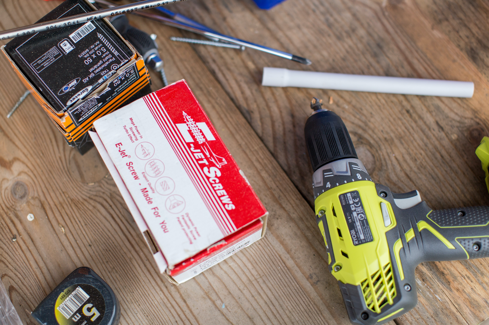

producto1
producto2

producto3
producto4

NUESTRA TIENDA

En nuestra tienda ofrecemos servicios de arreglos
entre los cuales se encuentran:
colocacíon de cerámicas
radiel reconversion de bañadera a shower
En nuestra tienda ofrecemos servicios de arreglos
entre los cuales se encuentran:
colocacíon de cerámicas
radiel reconversion de bañadera a shower